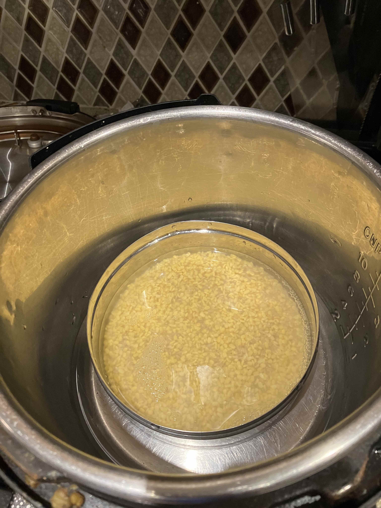
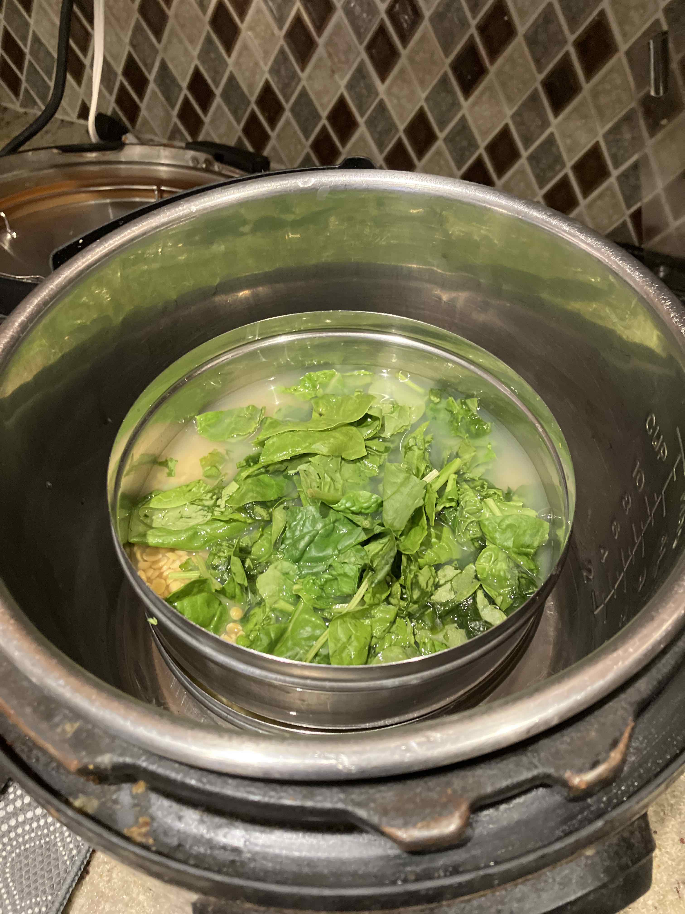
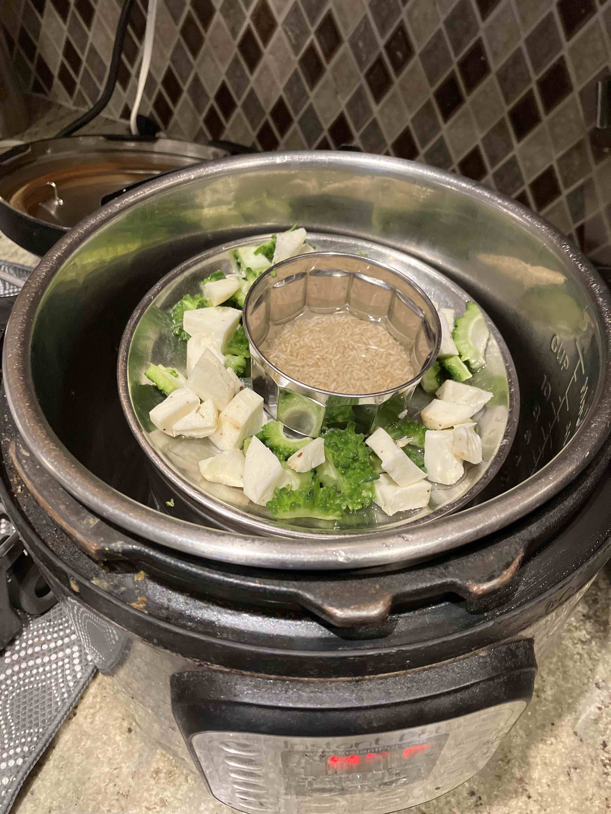
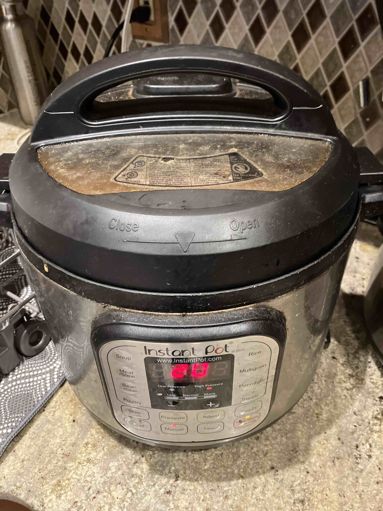
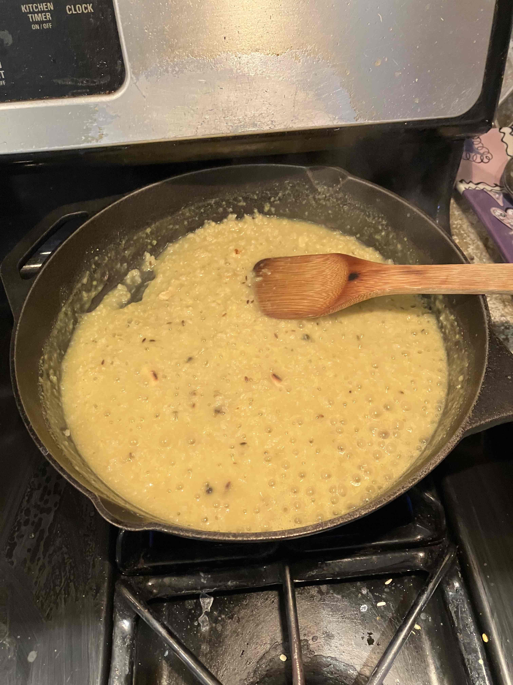
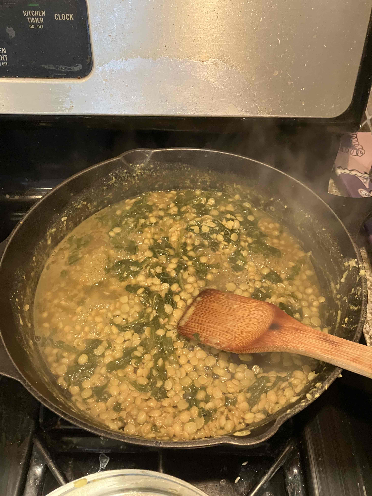
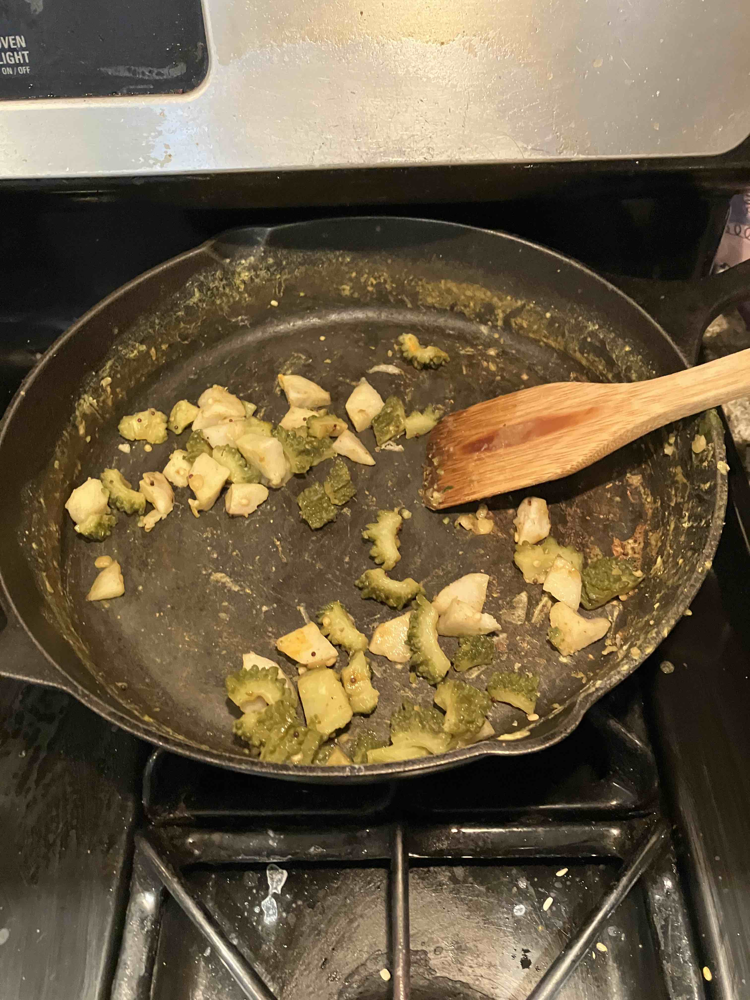
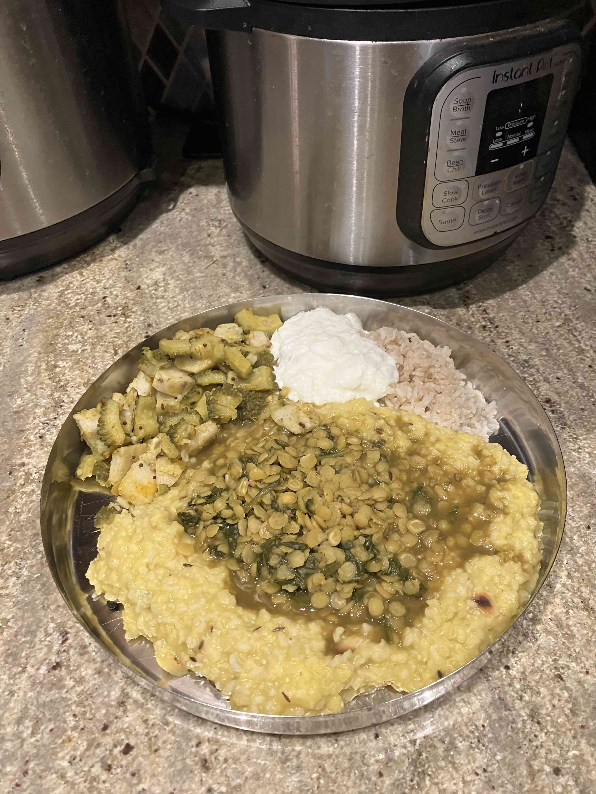

Pongal recipe
This is the recipe I use to make pongal with side dishes.
I usually use an instant pot and put water in the bottom. Then I use smaller containers to create three layers:
- Bottom layer: Equal amounts of brown rice and split moong dal, added with water (so the water line is around a centimeter above the food)
- Middle layer: Split toor dal, vegetables, water. In the pictures below, I use spinach.
- Top layer: Some plain rice in a cup, cut vegetables. In the pictures below, I use bitter gourd and taro.
Then I pressure cook it on high for around 20 minutes. After it is finished pressure cooking, I make three dishes using a cast-iron skillet:
- Pongal:
- Put ghee in the skillet on the stove
- Add cut ginger pieces, black peppercorns, split cashews, cumin
seeds and let it cook / brown
- Add the cooked rice + split moong bean
- Add turmeric powder and salt; mix well and let it cook
- Then the pongal is ready!
- Sambar:
- Put oil in the skillet
- Add fenugreek seeds let it cook / brown
- Add the toor dal + vegetables
- Add turmeric powder, sambar powder, tamarind paste, and salt, mix well and let it cook
- Then the sambar is ready!
- Vegetables:
- Put oil in the skillet
- Add mustard seeds and whole urud dal, let it cook / brown
- Add the vegetables
- Add turmeric powder, sambar powder, and salt, mix well and let it cook
- Then the vegetables are ready!







